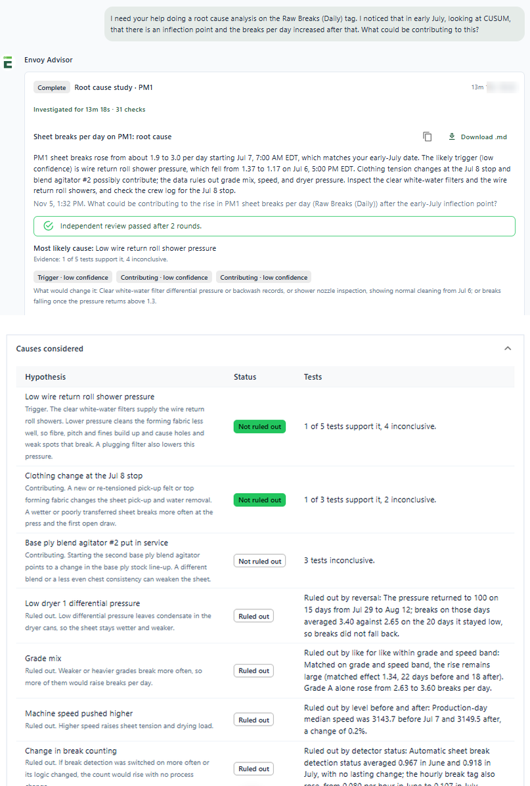

Onboarding and training
Give new engineers and operators a way to explore equipment, terminology, procedures, and operating targets. Support their training with explanations they can revisit as they gain experience in the plant.
Knowledge and Guidance Module · Envoy Intelligence
Like having a PhD process engineer on call, 24/7. Envoy Intelligence connects AI agents to your process data, equipment, procedures and past investigations, so the answers are about your machine and the chemicals you run, not machines in general. It helps your team troubleshoot quickly, investigate deeply and bring new people up to speed.

Make Experience Easier to Access
The answer a new engineer needs may be in a procedure, a past investigation, or the experience of someone who is unavailable. Finding that knowledge takes time, especially when a plant is hiring, changing shifts, or operating with a lean engineering team.
Envoy Intelligence brings relevant process knowledge into the work of learning and troubleshooting. Start with your equipment, operating context, and approved information so the guidance relates to the plant your people actually run.
A Real Answer
An engineer asked why sheet breaks rose in early July. Envoy Intelligence worked through the machine’s own data, tested each likely cause, and came back with the evidence. This is the actual answer, as the engineer saw it.

Practical Applications
Help experienced teams apply what they know and make that knowledge easier for new colleagues to use.
Give new engineers and operators a way to explore equipment, terminology, procedures, and operating targets. Support their training with explanations they can revisit as they gain experience in the plant.
Connect a measurement or setting with its purpose and the equipment around it. Help people understand how changes in one area can affect performance elsewhere.
Bring a reliability finding or a centerline deviation into the investigation, alongside relevant equipment information, operating conditions, and approved procedures. Help teams frame useful questions, examine the available evidence, and decide what to check next.
Make approved procedures and reviewed findings easier to find and discuss. Give the next shift or new hire access to useful knowledge beyond the people who first developed it.
Grounded in Your Operation
A general AI tool can only give general advice. Envoy Intelligence answers with your equipment, the information you trust and the conditions you are running.
Reasonable for any paper machine. Not specific to yours.
Breaks rose from about 1.9 to 3.0 a day starting Jul 7, 7:00 AM. The likely trigger is wire return roll shower pressure, which fell from 1.37 to 1.17 on Jul 6. Clothing tension at the Jul 8 stop may contribute. Grade mix, speed and dryer pressure are ruled out.
Check next: clear white-water filter dP and backwash records, then the shower nozzles.
Engineering Support That Stays Involved
Envoy’s process engineers help define the application, interpret difficult findings, and connect the analysis with practical operating experience. For plants with limited engineering capacity, that gives the local team additional people to turn to.
When an investigation produces a useful answer, your team and Envoy engineers can review the finding and document what was learned. That reviewed knowledge can support future training and investigations. The plant’s people retain responsibility for operating decisions and approved procedures.
Envoy Intelligence works alongside Process Reliability Reporting and Smart Centerlines. Together, the modules connect the issues that deserve attention, the conditions the team is working toward, and the knowledge needed to respond.
Strengthen Your Team
Tell us where onboarding, finding answers, or recurring investigations take too much time. We’ll explore an application grounded in your equipment, information, and team’s needs.